Inquisitor
Melee damage and tank; godsbone.
The armed hand of the Order of the Fallen: zealots with shotguns and holy rites, who hunt the Black Synod, the Hollowed and anyone who deals in ashblood. The Covenant has its own Inquisitors, who judge their own kind.
Spellbook
Role: Melee DPS / Tank (hybrid) · Resource: Zeal (built in combat, spent on Judgments) · Races: Dwarves, The Risen, Half-Bloods
A religious fanatic who carries a shotgun in one hand and holy or ritual magic in the other, to purge heretics and monsters.
In Orvessa: inquisitors serve the memory of the dead gods and draw holy power from godsbone relics. Their heretics are the Black Synod, the Hollowed and anyone who deals with ashblood. Since Varnhalt's death they see enemies everywhere, and they are not always wrong.
| Level | Spell | Effect |
|---|---|---|
| 1 | Shotgun Blast | Close-range shot |
| 4 | Holy Smite | Holy damage |
| 8 | Mark of Heresy | Marks a heretic |
| 10 | Rebuke | Interrupts a spell |
| 14 | Purge | Removes a buff |
| 18 | Ritual Flame | Burning ground |
| 22 | Sanctify | Heals you |
| 26 | Chains of Penance | Roots |
| 32 | Judgment | Finisher |
| 38 | Righteous Fury | +damage |
| 46 | Exorcism | Extra damage against undead and demons |
| 54 | Divine Wrath | AoE smite |
| 60 | Crusade | Ultimate: a massive aura that buffs the whole raid |
Talent trees
- Judgment (DPS): Searing Verdict, Shell Mastery, Zeal Efficiency, Wrath of the Faithful. Capstone: Final Verdict.
- Sanctified (tank): Armour of Faith, Bastion, Penance, Holy Reprisal. Capstone: Unbroken Faith.
- Heretic's Bane (dark ritual): Blood Offering, Forbidden Rites, Profane Ammunition, Hex Mastery. Capstone: Dark Absolution.
Gallery

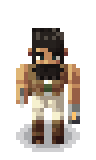

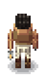

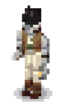

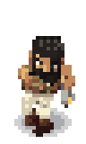

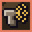

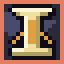

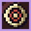

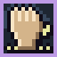

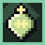

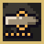

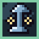

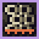